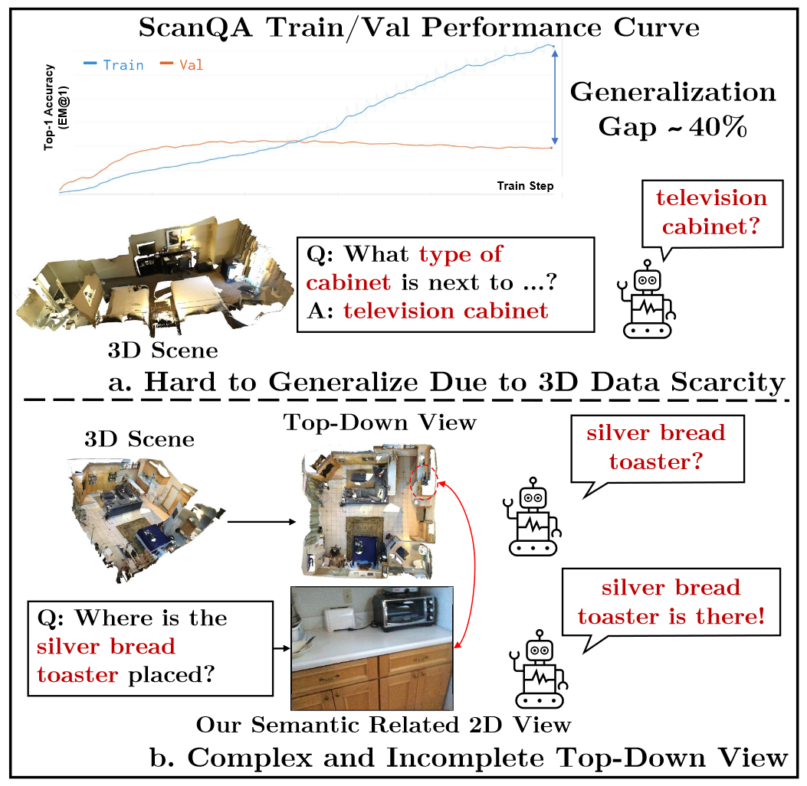
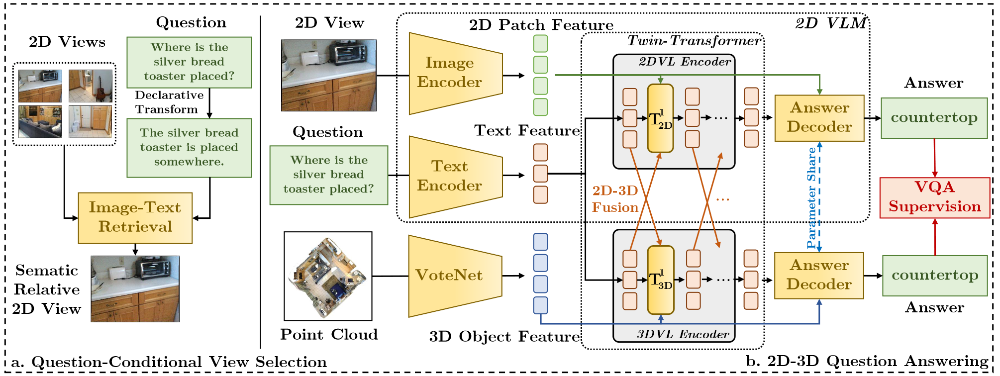

Abstract
In 3D Visual Question Answering (3D VQA), the scarcity of fully annotated data and limited visual content diversity hampers the generalization to novel scenes and 3D concepts (e.g., only around 800 scenes are utilized in ScanQA and SQA dataset). Current approaches resort supplement 3D reasoning with 2D information. However, these methods face challenges: either they use top-down 2D views that introduce overly complex and sometimes question-irrelevant visual clues, or they rely on globally aggregated scene/image-level representations from 2D VLMs, losing the fine-grained vision-language correlations. To overcome these limitations, our approach utilizes question-conditional 2D view selection procedure, pinpointing semantically relevant 2D inputs for crucial visual clues. We then integrate this 2D knowledge into the 3D-VQA system via a two-branch Transformer structure. This structure, featuring a Twin-Transformer design, compactly combines 2D and 3D modalities and captures fine-grained correlations between modalities, allowing them mutually augmenting each other. Integrating proposed mechanisms above, we present BridgeQA, that offers a fresh perspective on multi-modal transformer-based architectures for 3D-VQA. Experiments validate that BridgeQA achieves state-of-the-art on 3D-VQA datasets and significantly outperforms existing solutions. Code is available at BridgeQA Codebase.
Motivation
Caveats of current 3D-VQA methods. (a). Current 3D-VQA methods exhibits large generalization gap due to 3D data scarcity. And there are questions with visual concepts that never appeared (e.g., "television cabinet") in either question, answer or object type annotation during training, which are hard for 3D-VQA models to generalize to. (b). Current 3D-VQA methods that explictly incorporate 2D VLMs use top-down views of 3D scenes, which might be too complex with many irrelative visual clues and might be incomplete on relative visual clues for some questions. In BridgeQA, we use question-related views instead, to capture visual context potentially relative to the question.
Method Overview
Overview of BridgeQA. Our method consists of two main components: question-conditional 2D view selection and a Twin-Transformer 2D-3D VQA framework. (a): In question-conditional view selection, we identify semantic-related 2D views by retrieving images that align with the question's declaration form. This method captures relevant visual cues to enhance the 2D-3D question answering model. (b): Our 2D-3D VQA framework utilizes a Twin-Transformer structure, comprising two branches: a 2D vision-language model (VLM) and a 3D branch of similar structure. We apply a lightweight 2D-3D fusion operation. This integration infuses 2D visual context into 3D VQA without modifying the underlying 2D VLM architecture, preserving the pre-trained 2D VL knowledge while allowing for compact fusion of intermediate representations.
Experimental Results
Our method achieves state-of-the-art performance on ScanQA and SQA datasets, and surpasses previous 2D and 3D vision-language pretraining (VLP) methods.
Introduction Video
Citation
If you use BridgeQA in your research or wish to refer to the results published in the paper, please use the following BibTeX entry.